01
Efficient cross-frame interaction
Share information at sparse-token scale.
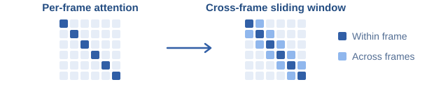
Sliding-window cross-frame attention
Local temporal context · efficient cross-frame interaction
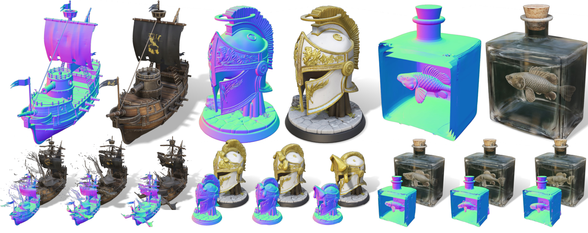
Gordon Qian (钱国成) · Researcher @ ByteDance San Jose
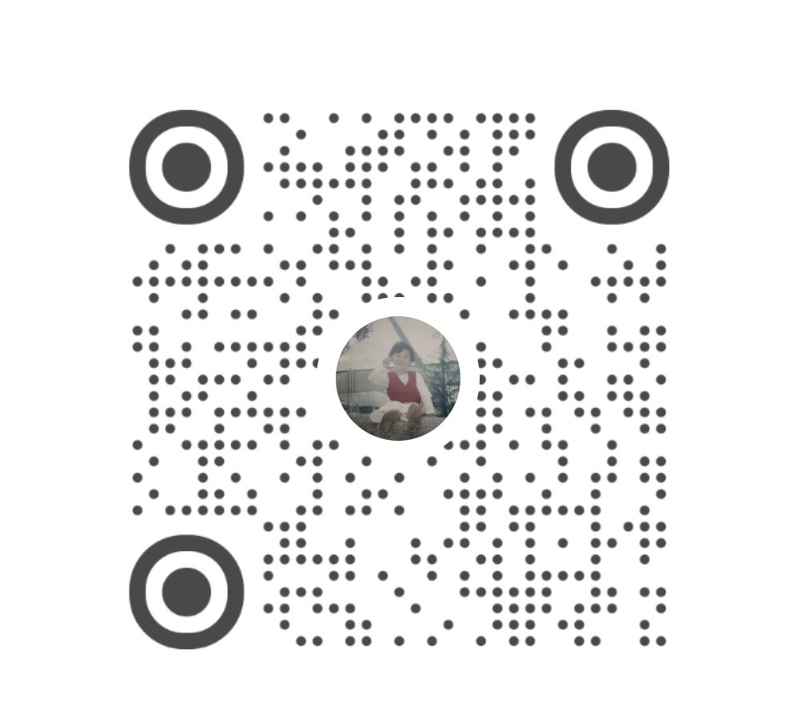
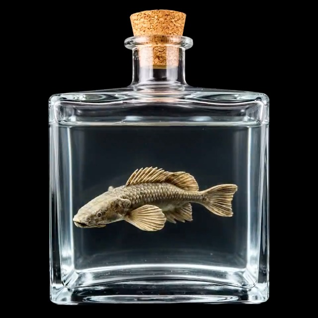
Monocular, object-centric video
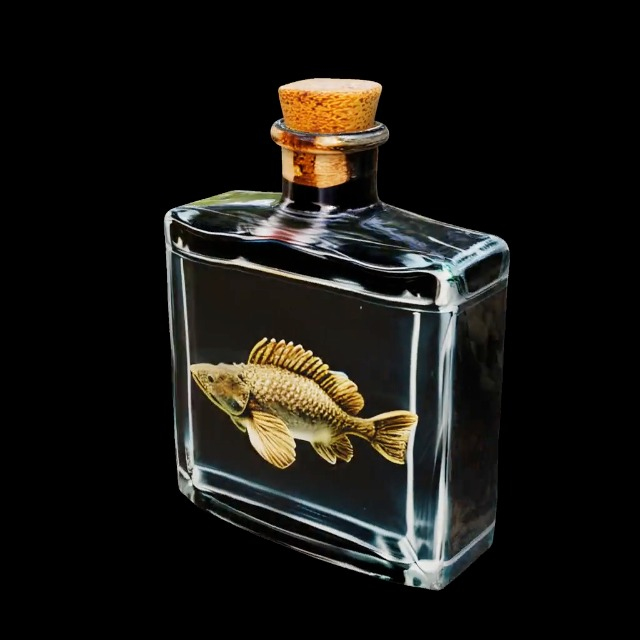
Canonical mesh + dense deformation
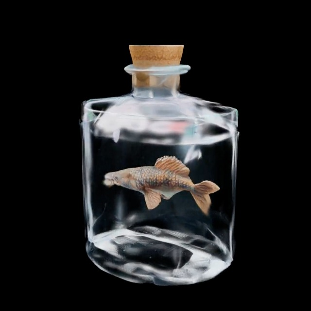
Structured spacetime latents
Remaining challenges
Image-to-3D results · static assets shown as turntables
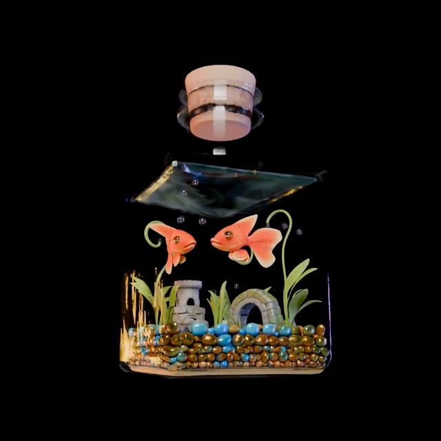
Transparent enclosure and interior geometry; cutaway view reveals the contents.
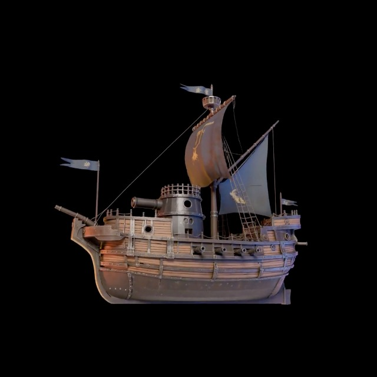
Fine ropes, railings and sails without requiring a watertight surface.
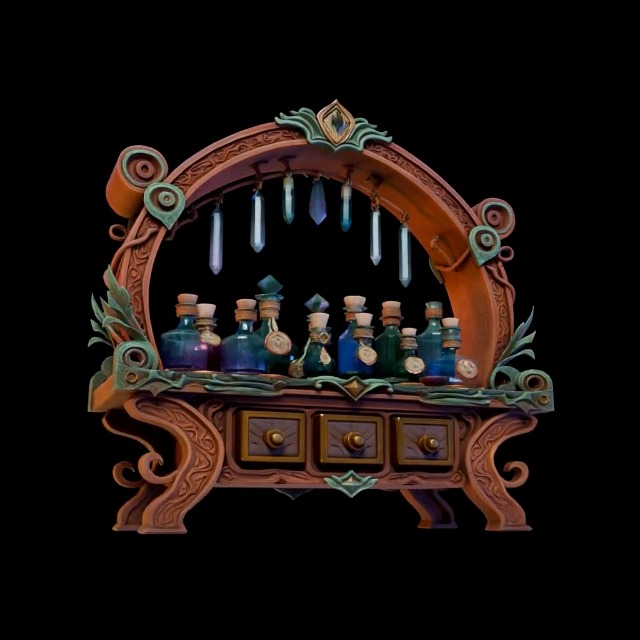
Detailed appearance with base color, roughness, metallic and opacity.
Our idea: inherit TRELLIS.2’s expressive representation and pretrained strengths for video-conditioned dynamic mesh generation.
Share information at sparse-token scale.

Sliding-window cross-frame attention
Local temporal context · efficient cross-frame interaction
Retain transparency and inner surfaces.
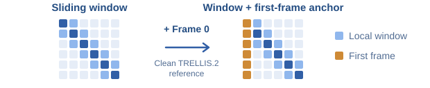
Sliding window + first-frame anchor
Clean TRELLIS.2 reference · inherited 3D capabilities
Add time without disrupting pretrained Q/K phases.
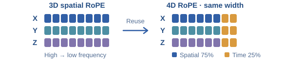
Parameter-free 4D ReRoPE extension
Repurpose low-frequency spatial bands · fixed head dimension
Keep strong geometry and material priors.
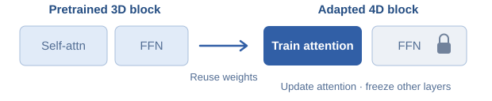
Pretrained weights + minimal tuning
Reuse initialization · fine-tune self-attention only
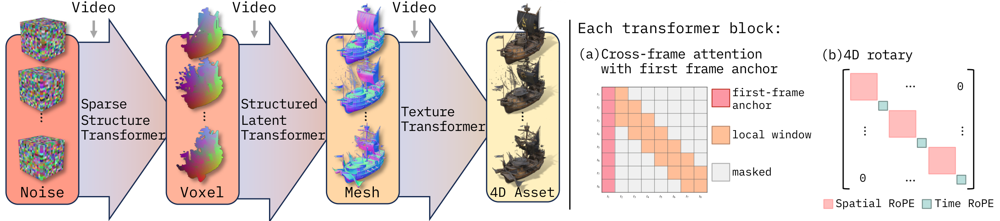
Each stage generates 16 frames jointly using cross-frame attention, a first-frame anchor and 4D ReRoPE.
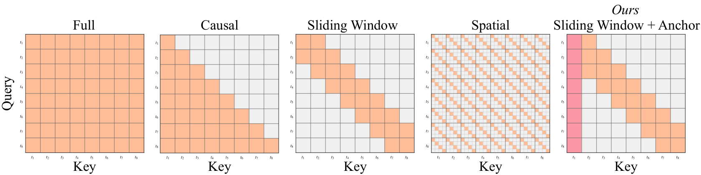
Nearby frames share motion and geometry information efficiently.
Window size 5 · up to 100K tokens per 4D sample.
Every frame can access clean frame-0 tokens for a stable shape and material reference.
Train: ground-truth frame-0 latent, zero noise timestep; loss only on later frames.
Infer: generate the anchor with frozen TRELLIS.2.
Frozen TRELLIS.2 · 32 held-out objects · retain α of the spatial frequency pairs; replace the remaining low-frequency rotations with identity.
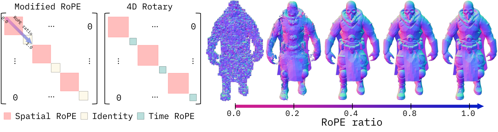
| Retained ratio α | 0.0 | 0.2 | 0.4 | 0.6 | 0.8 | 1.0 |
|---|---|---|---|---|---|---|
| CD-3D vs full RoPE ↓ | 0.0181 | 0.0098 | 0.0079 | 0.0079 | 0.0079 | 0 · reference |
Retaining ≥40% gives visually similar geometry in this probe.
CD plateaus at 0.0079 for α = 0.4, 0.6 and 0.8.
75% spatial pairs · 25% temporal pairs · same head width.
vs Mesh4D · strongest alternative
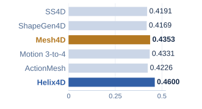
vs Motion 3-to-4 · strongest alternative
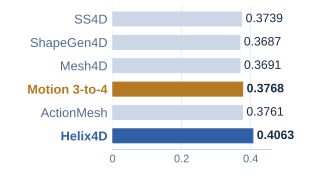
vs ActionMesh · strongest alternative
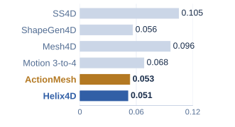
vs ShapeGen4D · most competitive
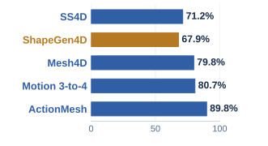
| Method | Helix4DBench | ActionBench | TexVerse | ||||||||
|---|---|---|---|---|---|---|---|---|---|---|---|
| CLIP ↑ | CLIP-N ↑ | ULIP-2 ↑ | Uni3D ↑ | DreamSim ↓ | FVD ↓ | Ours wins ↑ | CD-3D ↓ | CD-4D ↓ | CD-3D ↓ | CD-4D ↓ | |
| SS4D | 0.8468 | — | 0.4191 | 0.3739 | 0.2745 | 1046 | 71.2% | 0.105 | 0.120 | 0.052 | 0.103 |
| ShapeGen4D | — | 0.6876 | 0.4169 | 0.3687 | — | — | 67.9% | 0.056 | 0.170 | 0.075 | 0.129 |
| Mesh4D | 0.8533 | 0.7399 | 0.4353 | 0.3691 | 0.3025 | 979 | 79.8% | 0.096 | 0.141 | 0.058 | 0.100 |
| Motion 3-to-4 | 0.8674 | 0.7442 | 0.4331 | 0.3768 | 0.2697 | 955 | 80.7% | 0.068 | 0.114 | 0.056 | 0.108 |
| ActionMesh | — | 0.7156 | 0.4226 | 0.3761 | — | — | 89.8% | 0.053 | 0.081 | 0.056 | 0.111 |
| Helix4D | 0.8723 | 0.7569 | 0.4600 | 0.4063 | 0.2593 | 950 | Ref. | 0.051 | 0.093 | 0.045 | 0.097 |
ActionMesh leads ActionBench CD-4D (0.081 vs 0.093). Helix4D leads the other reported geometry metrics.
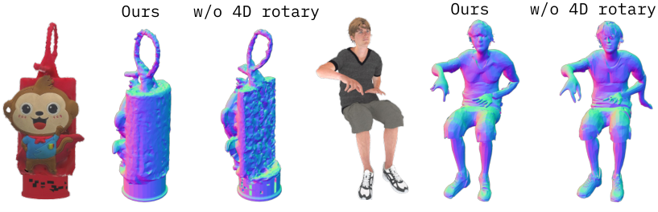
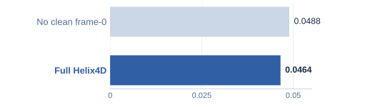
ULIP-2: 0.2809 → 0.2881 · Uni3D: 0.2554 → 0.2589
| Variant | CD-3D ↓ | ULIP-2 ↑ | Uni3D ↑ |
|---|---|---|---|
| Without first-frame conditioning | 0.0488 | 0.2809 | 0.2554 |
| Stacked temporal RoPE | 0.0478 | 0.2819 | 0.2584 |
| Full self-attention | 0.0467 | 0.2819 | 0.2530 |
| Full Helix4D | 0.0464 | 0.2881 | 0.2589 |
“Full self-attention” replaces the proposed window + anchor pattern.
| Pattern | CD-3D ↓ | CD-4D ↓ | ULIP-2 ↑ | Uni3D ↑ | Time ↓ |
|---|---|---|---|---|---|
| Full | 0.0470 | 0.1009 | 0.2835 | 0.2447 | 2.3× |
| Causal | 0.0491 | 0.1038 | 0.2838 | 0.2564 | 1.5× |
| Window | 0.0468 | 0.1085 | 0.2870 | 0.2538 | 0.9× |
| Spatial | 0.0471 | 0.1011 | 0.2791 | 0.2548 | 0.4× |
| Window + anchor | 0.0454 | 0.0970 | 0.2879 | 0.2576 | 1.0× |
Window + anchor: 2.3× faster than full attention, with better reported quality.
We presented Helix4D, an approach that adapts a pretrained image-to-3D generator into a video-to-4D mesh generator. We introduce a lightweight conversion of Trellis2 to dynamic generation through:
Encode time without adding parameters. Repurpose low-frequency spatial RoPE slots.
Share information efficiently. Combine local motion context with a global reference.
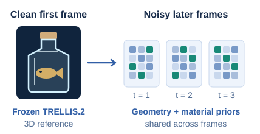
Carry strong 3D priors into 4D. Condition on a clean TRELLIS.2 first frame.
Paper · arXiv:2605.26109 Project · Helix4D
This viewer cannot play the HD video.
Open HD preview · 1600 × 900 · 30 fpsThank you
2026Gordon Qian (钱国成) · Researcher @ ByteDance San Jose